YouTube Short
NYFMF: Tribeca Festival 2025
Short-form festival preview for NYFMF at Tribeca Festival 2025.
Watch on YouTubeCreative Producer · Global Marketer
NYU Alum | B.A in Film & Television, Minor in Business of Entertainment, Media and Technology.
Ann is a
01
About / Short Bio
Ann is a recent Film and Television graduate from NYU Tisch with a
minor in Business of Entertainment, Media and Technology.
Ann is an aspiring marketer and producer interested in the use of
interactive and as a creative medium and ethical AI practices.
Through projects that combine storytelling and technology, she
explores how AI can be integrated into creative and business
workflows. With hands-on experience across the U.S. and South
Korea, she is driven to bring meaningful projects to life.
02
Short-form festival preview for NYFMF at Tribeca Festival 2025.
Watch on YouTubeVertical short capturing the atmosphere and motion of the Brooklyn parade.
Watch on YouTubeShort-form speaker highlight cut focused on stage moments and audience engagement.
Watch on YouTubeSummit highlight reel capturing key moments and speaker energy from the event.
Watch on YouTubeCampaign-style preview linking out to the completed Charney: Nevins video.
Watch on YouTube03
click to learn more about me
04
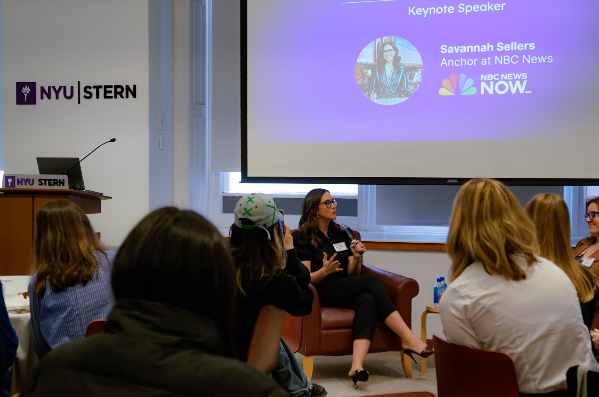
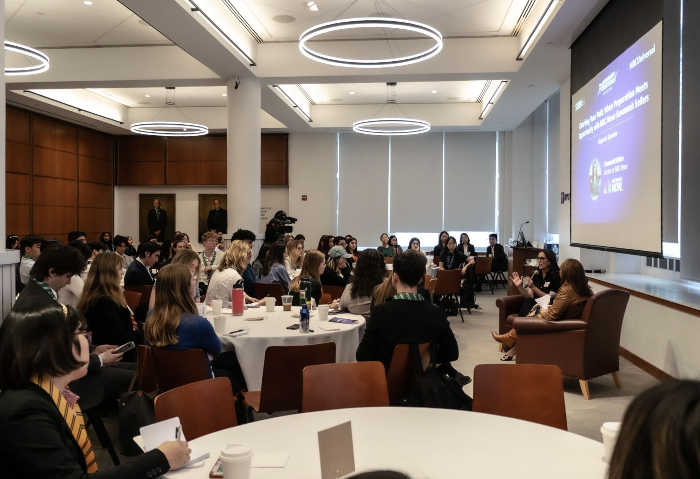
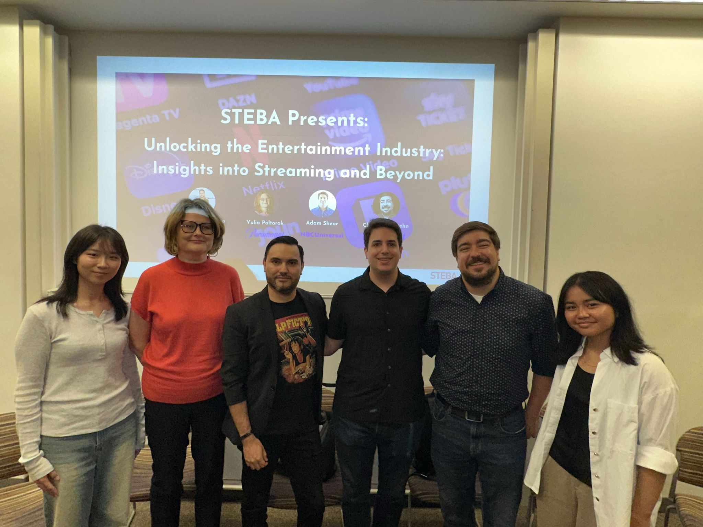
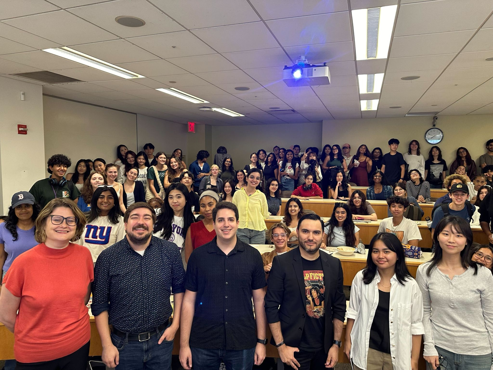
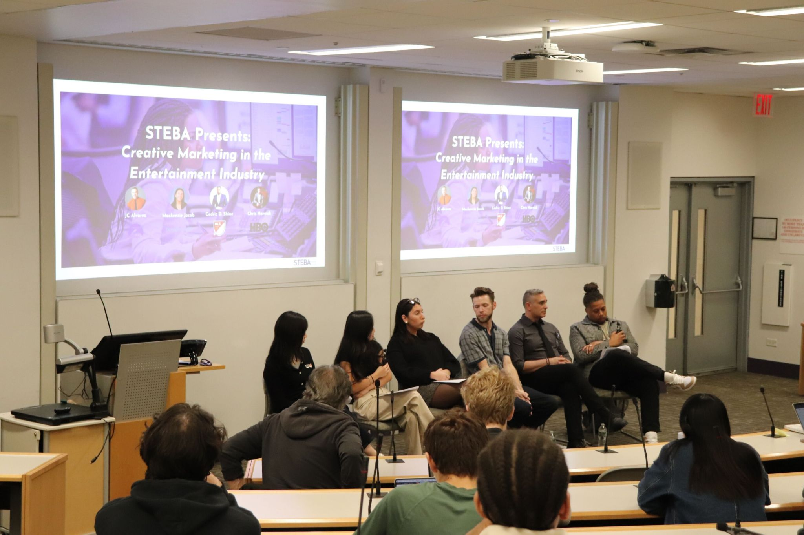
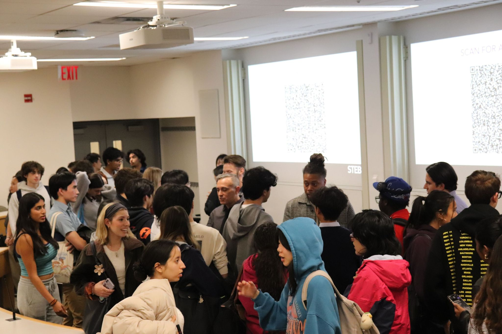
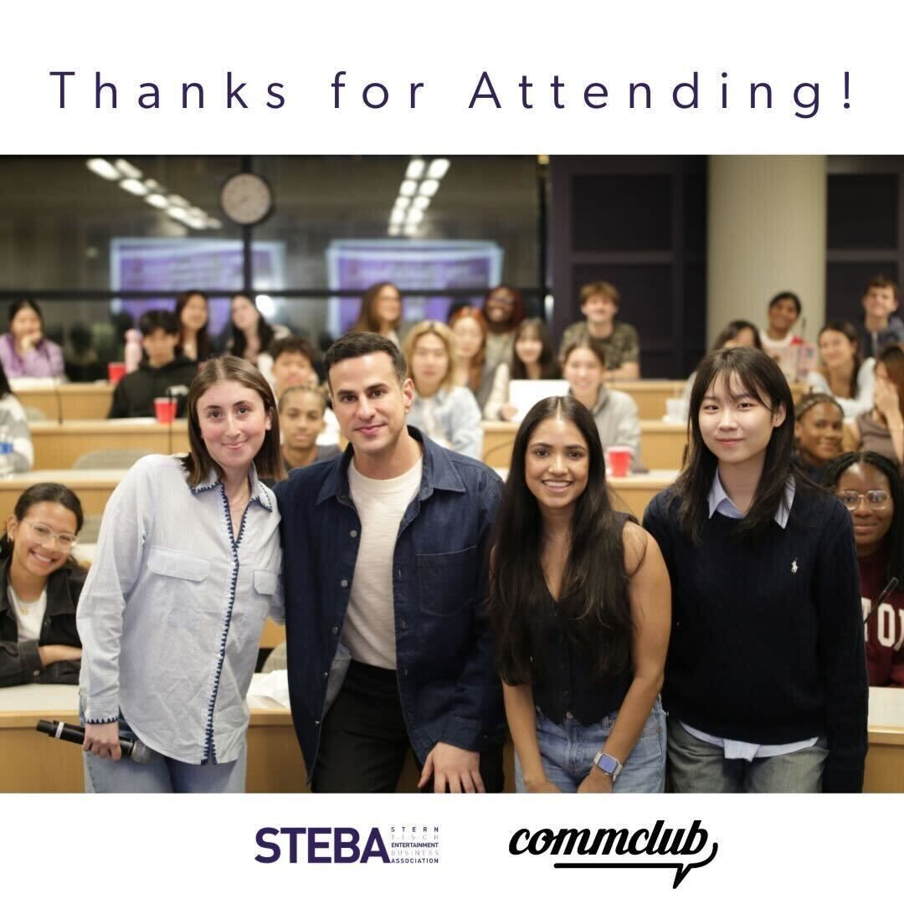
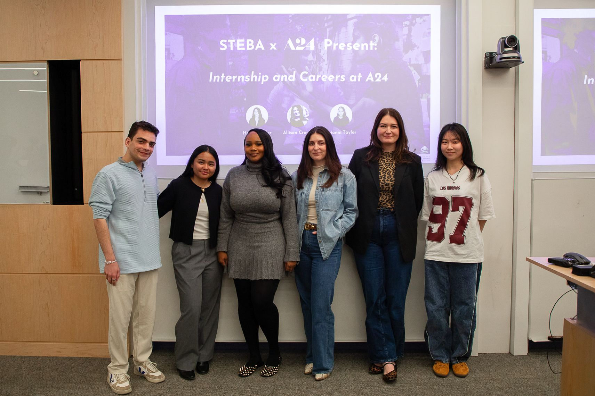
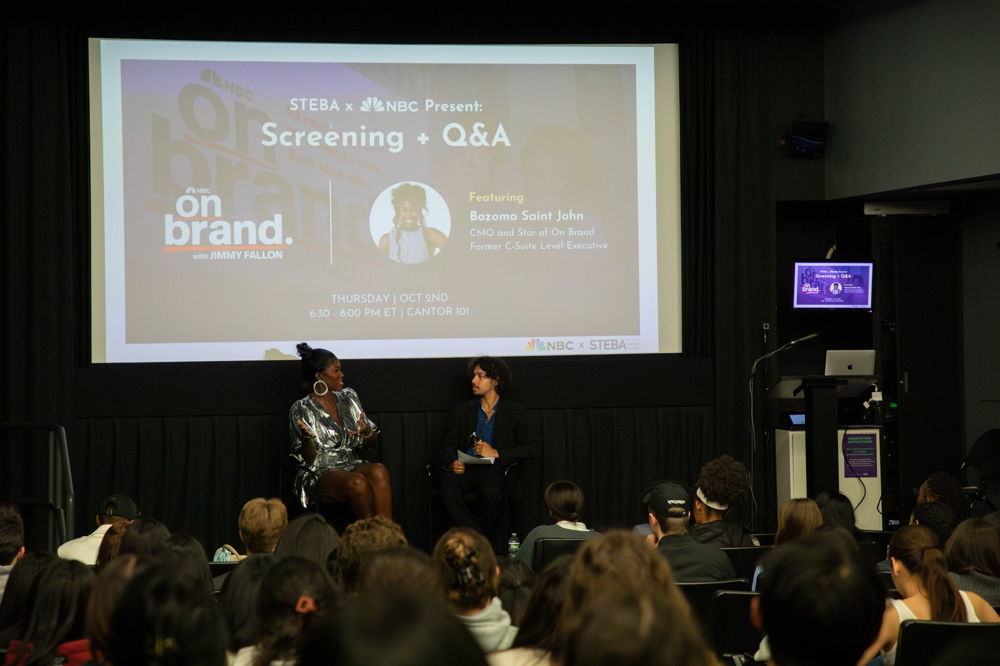
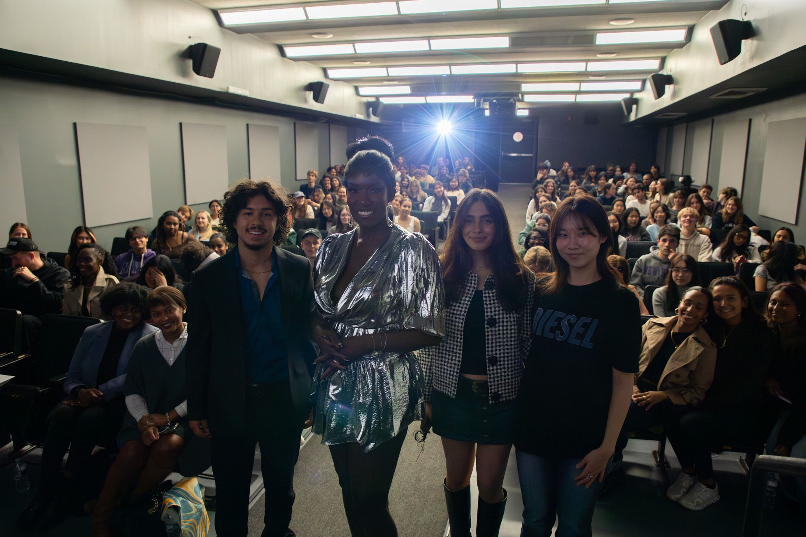

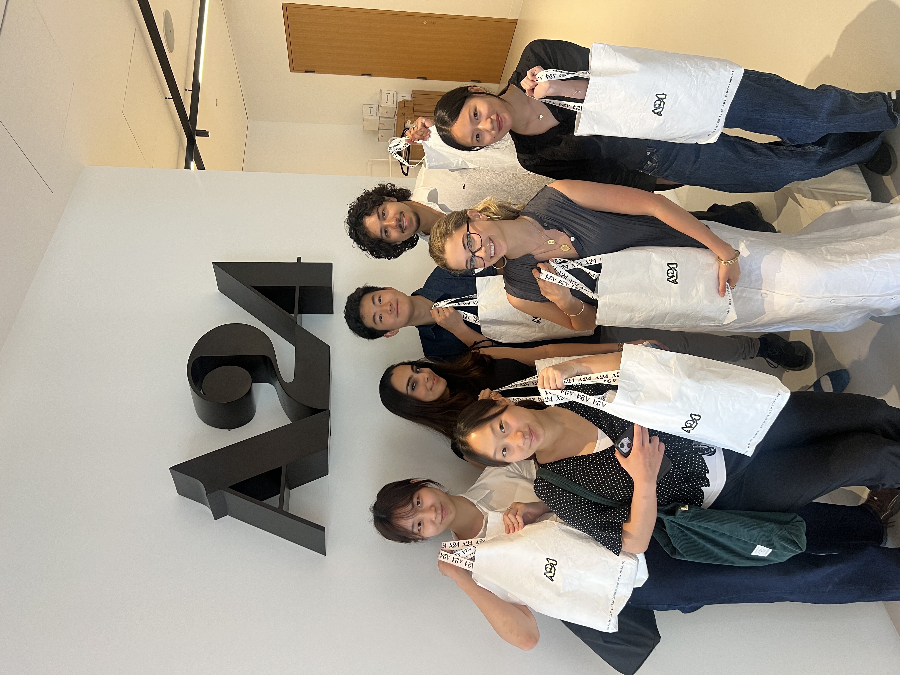
STEBA is an active club for students passionate about the entertainment business, encompassing diverse sectors such as television, music, film, games, and sports.
05
Let’s build something elegant and alive.